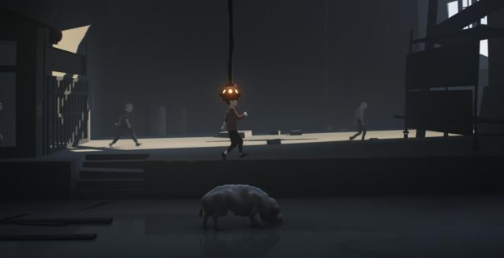

World Building in INSIDE
Date: 2018.04.07
Inside (styled as INSIDE) is a pseudo-3D, adventure and puzzle platformer made by Playdead Studio. The game is designated as a single-player playthrough with restraints on locations players could explore, with a relatively linear narrative. The mechanics involved are jumping, moving left, right, up and down, and grabbing. On PC, player use keyboard control that aligned with usual platformer game conventions such as arrow keys.
The atmosphere of the game lies within sci-fi and mystery. Players are placed in a mind-control dystopia, which is not given instructive explanations for. The game starts with a boy that player controls, who seems to be escaping and being chased after at first, and players experience a drastic change when the story takes a turn. The story narrative is embedded in the environment settings as players advance as the little boy. While players solve puzzles in progression, the game is offering thrilling experience as the timing of each challenge seems to be just in time for the boy to proceed.

Inside is created by Playdead, a relatively small studio (35+) based in Denmark. The game received great acclaim upon release and was produced under the gravity of the studio’s previous game, Limbo, which is also a widely praised production. The studio is supported for their production of Inside by Danish Film Institute, which has even more significance in the cinematics created in the game. Even Playdead positioned themselves as the “creator of Limbo”. To some extent, these two games are similar stylistically. Both offers no instructions or dialogue, and barely any textual elements. The explicit story-telling in both games is non-existent. In a way, Inside has even better graphic representation of world creation as the studio moves from 2D graphics to 3D production in Unity.
The use of ambient sounds in the game has greatly contributed to the immersive experience of the world presented to us in Inside. The footsteps on the grass, the boy’s panting after running, the shrilling sounds of dog barking… all demonstrate a level of delicacy as well as concision. It is important to note that such sounds are designated to imitate realistic sounds even though Inside is a virtual world.
On the other hand, the background music sets as the indicator of the plots, occurring at the point where the players seem to pass an entry level, after getting familiar with the pace of the game, the basic controls, and finished the first dynamic puzzle. Not all of the scenes contain background music, yet the audio is never empty. Inside’s choice of involving sounds aligns with what would be heard in the real world under that condition. There are echoes of metal dropping, panning of truck driving sounds as it gets closer or away.
The overall color of the graphics is low-saturated, grey-filtered, and foggy, setting a gloomy and mysterious mood. Motion blur is used in the panning of camera, which is typically used in first-person games. It is interesting to involve motion blur in a side-scrolling, third-person game like Inside. Such attempt visually rebuilds the cinematics when moving, making it seems more realistic to audiences.
A character design to be noted in this game is the omission of facial features like eyes, noses, and lips. All characters (at least human-like characters) are all faceless. But they are not faceless in a frightening way. They are not meant to be like jump scares in horror games. But rather the facelessness is a norm in Inside. The lack of facial features also, to some extent, dehumanize the characters. We could suspect that the intended omission of faces contributes to the theme of the game. The lack of face recreates the lack of emotions, and this emotionlessness fits with the mind-control story premise within Inside.
Inside cannot seem to be described as a particularly dynamic game as the narrative of the game is scripted. Its story is to be told as players progress. Players controls over the protagonist is jump, move in four directions, and grab. They are allowed to only move in designated areas with relatively linear progression. Without player’s interactions, the story does not progress on its own (or say the players do not get to discover the rest of the world), but there are particular entities that are programed to chase after players, such as barking dogs, men wearing suits. The game encourages players to move around certain items to solve puzzles and continue their journey, from moving a cart in order to reach certain height to more complex puzzles of controlling another identity using mind-control helmets; to control a third identity when the second identity uses the helmet. Staying still while being chased would result in failure of the level and prompted to restart from the last check point. One thing to note is that the check points are relatively invisible, though they are accessible through settings menu. This makes the gameplay more seamless and contributes to the flow of the game.